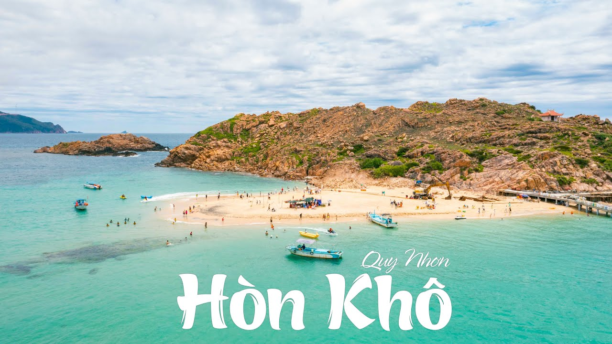
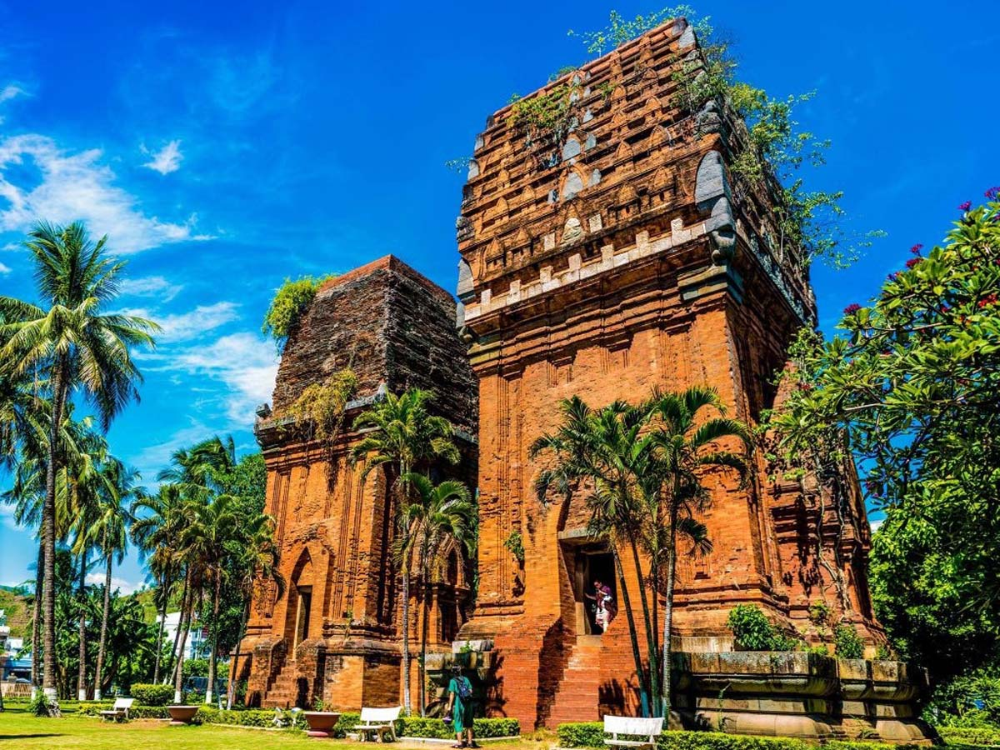

Điểm Tham Quan Nổi Bật
-  Hòn Khô: Một hòn đảo hoang sơ, lý tưởng để tắm biển và lặn ngắm san hô.
-
 Đầm Thị Nại: Một trong những đầm phá lớn nhất Việt Nam, thích hợp cho những chuyến tham quan bằng thuyền.
Đầm Thị Nại: Một trong những đầm phá lớn nhất Việt Nam, thích hợp cho những chuyến tham quan bằng thuyền.
-  Tháp Đôi: Công trình kiến trúc cổ của người Chăm.